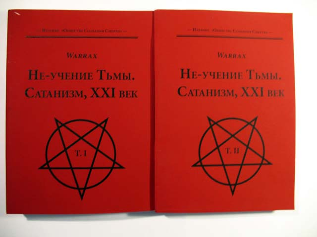

Warrax
НЕ-Учение Тьмы. Сатанизм, XXI век

В двух томах (по 416 стр), Древний Город: Издание «Общества Сознания Смерти», 2011
Такой вот симпатичный самиздат. В книге собрано то, что из написанного на тему сатанизма я счел логичным видеть в бумаге.
Примечание: "Princeps Omnium" содержит примечания и дополнения, которых нет в версии на сайте. Они незначительны по объему, но часто достаточно серьезны по смыслу.
Где купить
Книжная Ярмарка, С/К "Олимпийский"
1 этаж, место №16.
Время работы: с 10.00 до 15.00, понедельник выходной.
Ст. метро "Проспект Мира", выход к спорткомплексу "Олимпийский".
Розничная цена 1500 руб.
Заказ по почте и прочее: satananda@mail.ru
(данные на февраль 2012)
Оглавление
Первый том
Предисловие V.L.S.L.V.
8
Предисловие автора
12
Princeps Omnium
15
Вступительное слово DoctoR'а
17
Предисловие к редакции 2.1
19
Intro
21
Доисторическая эпоха
30
Язычество
43
Зороастризм
85
Иудаизм
96
Каббала
110
Гностицизм
115
Дьявол в христианстве
120
Манихеи, павликиане, богомилы, катары
143
Ислам
153
Литература Нового Времени
158
Психопатологические сущности и рецидив дуализма
171
Добро/Зло — мифы и реальность
178
Психологические корни архетипа
219
Θελημα: взгляд мистиков на Единое и Иное
243
Развитие психологического начала в различных мировоззрениях 253
Сера как символ алхимиков
265
XV Аркан
272
Ассоциация Змея с архетипом Сатаны
277
Хаос и Сатана
280
Оккультные нюансы трактовки
287
Филология и фольклор
294
Иконография Дьявола
301
Размышления на тему
328
Outro
334
Теология сатанизма
335
Религиозный аспект
341
Профилактика возражений
345
Философский аспект
348
Психологический аспект
354
Бог как метафизическая Сила
358
Visio Vigilantum
360
Апофатика сатанизма
364
Вместо вступления
364
Эгоцентризм
367
Беспринципность
368
Подмена сатанизма в целом на одну из граней восприятия
369
Эскапизм от социума
370
Отсутствие творчества
374
Примазывание к «сильному мира сего»
374
«Все — сатанисты»
375
Восприятие как временного явления
376
Восприятие исключительно как разумного эгоизма
376
Восприятие себя как физического тела
377
Отсутствие этики
379
Исключительно виртуальная деятельность
380
Попытка разделить сатанизм на -измы
381
Нажива на идее
381
Вседозволенность
382
Позиция «плевать я хотел на других сатанистов»
383
Понимание оккультизма как «обретения могущества на Земле»
384
Поклонение
385
Восприятие сатанизма как религии
385
Определение сатанизма через некий набор черт
385
Восприятие самого себя богом
386
Сциентизм
387
Стремление подражать
388
Отождествление признака и явления
388
«Сатанинское счастье»— здоровье, деньги и власть
389
Гедонизм
389
Человеческое
389
Восприятие как субкультуры
391
Поиски «Красной Кнопки»
392
Отсутствие Сатаны
394
Essentia
396
Сатанист и социум
398
Рассуждение первое
398
Рассуждение второе
400
Рассуждение третье
401
Рассуждение четвертое
402
Рассуждение пятое
406
Рассуждение шестое
409
В заключение
410
Еше от Zardoz
411
Второй том
Вера — что это такое?
7
Вера, доверие, уверенность
10
Человеческое, слишком человеческое
15
Религия и вера
18
Вера и наука
22
Гуманитарный способ мышления
26
Гносеология — недавняя дисциплина
29
Атеизм
31
Резюме
33
Скептицизм
34
1.История скепсиса
34
2. Принципы скептического миропонимания
37
3. Критика скептицизма
43
4. Классический скепсис и праксис
58
5. Деятельный скепсис
64
6. Современные скепсис и праксис
73
Концепт и архетип Сатаны: современное состояние
82
Апокриф 2010
124
Апокриф-I: Что есть сатанизм?
124
Апокриф-II: Этика сатанизма
131
Апокриф-III: Люди и анхуманы
144
Апокриф-IV: Атеизм, скептицизм и оккультизм
155
Апокриф-V: Телема и сатанизм
166
Апокриф-VI: Новый Эон
200
Pentaculum elementorum
208
Вступление от V.L.S.L.V.
209
Προλεγομενα
211
Нумерология
215
Оккультные многочлены
224
Эволюция ψυχη на примере младших карт Таро
239
Европейская система стихий: четыре
255
Восточная система стихий: пять
261
Северная система стихий: пять
266
Разделение на стихии с учетом мужского/женского
269
Пентаграмма для пятого элемента
276
Пятая стихия — это вам не «дух»!
284
Тёмный Пентакль Стихий
293
V.L.S.L.V.: Пять Черных Потоков — Антилогосов Рассоздания
299
Список литературы
302
Тьма, Хаос, Бездна, Ад
309
Методологическое
310
Хаос
313
Тьма
318
Бездна
321
Обобщающее
322
Ад
322
Немного нумерологии
323
Примечания напоследок
324
О том, что не имеет значения
326
Подборка фрагментов интервью
332
Журнал «Апокриф» (май 2010)
332
Интервью Iss’у (октябрь 2009)
339
Интeрвью для CONTRA DEI #3 (2007 г)
348
Интервью для CONTRA DEI #1 (январь 2004 г)
350
Художественные рассказы
359
Дикая охота
359
Дудочник не из Гаммельна
361
Разговор о морали и мотивациях
376
Притчи
386
Интервью Обществу Сознания Смерти
394
Предисловие V.L.S.L.V.
...В Род Богов не позволено перейти никому, кто не был Философом и не очистился до конца, — никому, кто не стремился к познанию. (Платон, «Федон») |
В некотором смысле, слова сильнее людей. Слова управляют Миром: они пугают или привлекают, они становятся оружием или лекарством, они могут скрывать за собой бездны смысла или маскировать невежество говорящего. Современные люди так привыкли общаться на уровне одних лишь слов, что представляется удивительным, как они вообще могут понимать друг друга.
Когда Warrax произносит или пишет слово «Сатанизм», у подавляющего большинства слушателей или читателей это автоматически вызывает одну из двух реакций:
1) Если человеку не нравится это слово (точнее, то, что оно, по его мнению, означает), он презрительно кривит лицо и, не дослушав или не дочитав до конца, отворачивается с «праведным» чувством неприязни к личности автора;
2) Если человеку нравится это слово (точнее, тот смысл, который, по его мнению, оно несёт), он приходит в эмоциональное возбуждение и, не дослушав или не дочитав, проникается к автору симпатией, полагая, что тот находится «на его стороне».
При этом в обоих случаях реакция происходит механически, неосознанно, как бы сама собой, — практически минуя Разум.
Так человек упускает возможность задуматься и осознать нечто новое, научиться чему-либо, — он просто следует укоренившимся в нём стереотипам и привычкам:
1) Рассматривать не действительность, а скрывающие её ярлыки, которые на самом деле могут не соответствовать обозначаемым ими явлениям, воспринимая информацию не творчески, а механически, не увеличивая степень собственной осознанности, а ища в рассматриваемом предмете повода для ещё бóльшего укрепления в собственном эмоциональном настрое;
2) Воспринимать информацию не ради расширения собственного кругозора, а лишь для того, чтобы лишний раз убедить себя в «правильности» своего Мировоззрения и «неправильности» чужого, рассматривая получаемую информацию не в связи с её соответствием действительности, а исключительно в качестве подтверждающей либо не подтверждающей уже имеющиеся представления;
3) Делать всё словно во сне — бездумно и бесцельно, практически не приходя в Сознание.
В определённом смысле, обычный человек не в состоянии ничего «делать», — всё «случается» с ним само собой. «Для того чтобы делать, необходимо быть», — говорил Г.И. Гурджиев, имея в виду неспособность обычного человека, не имеющего единого внутреннего центра и действующего обусловленно, механически, делать что-то по собственной Воле.
В каждый миг Жизни человеком управляют те или иные внешние силы, всевозможные посторонние влияния, а также его собственные неосознанные желания, вожделения и пристрастия, с которыми он в настоящее время отождествлён. Обычный человек не осознаёт себя и принимает свои обусловленные реакции за свою Истинную Волю. Между тем, он — лишь бессознательная игрушка в руках непонятных и неподвластных ему сил. Его личность не имеет единого центра, представляя собой скопище непрестанно враждующих друг с другом ложных «я», с которыми человек поочерёдно отождествляет себя, принимая желание каждого из них за манифестацию своей собственной Воли.
Потому первым шагом к обретению Истинной Свободы является осознание собственной обусловленности, т.е. того рабства, которое человек носит в себе. Осознанность — это необходимое условие для того, чтобы по-настоящему быть. Лишь тот, кто действительно есть, — кто «кристаллизовал» в себе индивидуальность, способную управлять разрозненными «я», — может обладать Истинной Волей по ту сторону всех обусловленных желаний и вожделений.
Понимание этого позволит читателю вырваться из тисков механических реакций и начать учиться прямо СЕЙЧАС (при условии, разумеется, что учение действительно входит в его намерения), воспринимая написанное как практику (определённого уровня) непосредственной работы с Сознанием.
Как, в свете вышесказанного, следует читать данную книгу?
Прежде всего, нужно постараться понять тот понятийный язык, на котором говорит автор. Это необходимо для того, чтобы читающий не приписывал автору собственных мыслей, но воспринимал то, что действительно имелось в виду, — или, по крайней мере, чтобы максимально (насколько это возможно) приблизиться к авторскому пониманию.
Не следует быть заранее «за» или «против» авторской позиции лишь потому, что вы «за» или «против» того Мировоззрения, принадлежность к которому автор декларирует в самом названии книги. Возможно, то, что он понимает под ним, значительно отличается от того, что понимаете под ним вы. Также не спешите переносить свои личностные симпатии или антипатии к автору на сам его труд; к тому же, если вы не знаете автора лично, а судите о нём исключительно по рассказам других людей, ваше отношение к его личности не имеет большого значения — хотя бы уже потому, что оно, в сущности, не ваше. Бездумное, механическое «согласие» или «несогласие» с авторской позицией — окажутся в равной степени бессмысленны и бесполезны для читателя, ибо станут лишь свидетельством того, что внутренняя работа оказалась не проделанной, что переход от обусловленного эмоционального восприятия к самостоятельному осознанию так и не произошёл. Данная книга — это не «Священное Писание», в которое «необходимо» слепо верить, а инструмент для раскрытия более глубокого взгляда на Мир и самого себя, на место человека во Вселенной и — одновременно — на место Вселенной в Сознании человека.
Эта книга не для всех. И не только потому, что для адекватного восприятия содержащейся в ней информации человеку необходимо обладать определённым интеллектуальным уровнем и остаточными базовыми знаниями (не говоря уж о доле здорового юмора), — но, прежде всего, потому, что она не призывает ни к банальной инверсии «общепринятого» Образа Мира, ни к переоценке количественных соответствий «положительного» и «отрицательного», а указывает Путь к выходу за пределы двойственности как таковой, к качественному переходу — к прорыву в Иное.
Эта книга — плод многолетних трудов автора — предназначена не для увлекательного времяпровождения, а для серьёзной работы над собой. В ней читатель не найдёт «жареной» информации о Сатанизме в его вульгарном или подростковом понимании, — здесь нет ни сочных описаний «Чёрных Месс», ни «Сатанинских оргий» с обнажёнными девственницами, ни «чудовищных» кровавых жертвоприношений, ни инструкций по полётам на метле, ни поцелуев Чёрного Козла в зад, ни прочей романтической чуши, привлекающей эмоционально возбуждённых недорослей, людей с явными психическими отклонениями и изолгавшихся ради очередной однодневной «сенсации» журналистов. Иными словами, на страницах этой книги читатель не найдёт ничего такого, с чем обычно связывается Сатанизм в представлениях обывателей, и от чего он столь же далёк, сколь далеки комиксы и кинематографические сказки о «Кинг-Конге» от реалий, с которыми имеет дело подлинная зоология. Эта книга — Зов Иного, который будет в действительности услышан лишь теми, кому он предназначен.
Sapienti sat!
[2011]
Предисловие
Вы держите в руках двухтомник, в котором собраны мои работы на тему сатанизма, которые я отобрал для публикации в бумажном виде. Признаюсь честно: некогда я слишком увлекся написанием статьей «против чего-то», и, хотя там всегда присутствовало значительное кол-во «pro», тем, кто не в теме, надо было это еще разыскать. Да и ссылаться неудобно: «на эту тему прочтите несколько абзацев в середине такого-то разноцветного от комментариев текста». В этой книге — работы, которые писались «pro» изначально, а всякие веселые «contra» вы можете почитать и у меня на сайте.
Первый том содержит самую большую работу на данный момент, «Princeps Omnium», написанную в соавторстве с Olegern’ом в 2004-м году, с моими небольшими пояснениями (выделены в тексте). Обращаю внимание: P.O. — это не «описание архетипа Сатаны», как нередко приходилось читать в интернете, а психологическо-культурологическая работа, в которой описывается концепт с выделением архетипических черт. И уж тем более нельзя заявлять, что-де мы описали там все черты архетипа (видел я такие списки). Не буду страдать скромностью: я считаю, что эту работу обязан прочитать каждый, кто интересуется темой «что есть сатанизм». Сейчас, спустя столько лет, я отчетливо вижу недостатки книги — но они не критические, просто сейчас я бы написал все гораздо четче, подробнее и научнее. Через несколько лет я рассчитываю это сделать.
Также в первом томе содержатся материалы, издававшиеся ранее в бумажном виде в журнале «CONTRA DEI». «Теология сатанизма» была написана специально для первого номера, статья раскрывает точку зрения на монобога с т.з. сатанизма. Из второго номера журнала взята статья «Апофатика сатанизма», в которой я перечислил ряд концепций, которые время от времени пытаются «приклеить» к сатанизму: то, чем сатанизм не является. Также публикуется мое рассуждение на тему «сатанист и социум», и завершается первый том небольшим метафизическим эссе «Essentia».
Второй том содержит более разнообразные материалы. Начинается он с двух работ, не имеющих непосредственного отношения к сатанизму: «Вера» и «Скептицизм». Тем не менее, я считаю, что их необходимо прочесть, раз уж вы взялись за этот двухтомник. Возможно, вы в курсе, что я категорически возражаю против того, чтобы сатанизм называли религией, выступаю категорически против веры и т.д. В этих статьях подробно раскрывается, что есть вера и в чем ее вред, а также описана гносеологическая концепция скептицизма, которая позволяет обходиться без веры, чего всем и желаю.
Тему сатанизма во втором томе открывает работа «Концепт и архетип Сатаны: современное состояние», написанная по докладу, сделанному на научной конференции «От заката до рассвета. Ночь как культурологический феномен» (24-26 ноября 2003 года, Государственный институт искусствознания). В материалах конференции она была опубликована в сокращенном виде, здесь — целиком.
Далее опубликовано то, что получилось, когда Литературно-эзотерический журнал «Апокриф» решил взять у меня интервью. Вопросы были интересные, я тогда как раз только что решил, что тему национал-социализма я проработал в достаточной степени и надо продолжать тему сатанизма — и решил ответить как подобает, на хорошем уровне. Когда дописал, то получилось не интервью, а сборник статей. Здесь публикуются: «Что есть сатанизм?», «Этика сатанизма», «Люди и анхуманы», «Атеизм, скептицизм и оккультизм», «Телема и сатанизм» и «Новый эон».
«Pentaculum elementorum» (в соавторстве с Т.Е.) — первая работа серии «Ad usum internum», в которой я собираюсь публиковать оккультные работы, рассчитанные на Тёмных оккультистов и требующих для восприятия соотв. подготовки. Статья содержит анализ 4- и 5-тичленных систем элементальных стихий, предложена пятая стихия и логичное графическое отображение системы, наиболее соответствующее сатанизму, также проведен нумерологический анализ числового ряда 1-10 с Тёмной стороны. Вторую работу серии «Zero non adaequat duo» я решил не в двухтомник не включать, она по очень узкому вопросу, а тут все же не полное собрание сочинений.
Также в книгу входит первая работа серии «Ad usum externum», в которой я собираюсь описывать то, что мне понятно «на подкорке», но неоднозначно трактуется другими. Начал я с описания базовых понятий, статья называется «Тьма, Хаос, Бездна, Ад».
Далее во втором томе опубликована еще одна работа апофатического характера «О том, что не имеет значения», выдержки из нескольких интервью прошлых лет (ответы, которые полезно прочесть, не личного характера) и несколько художественных рассказов: «Дикая охота», «Дудочник не из Гаммельна», «Разговор о морали и мотивациях» и «Притчи», которые удались мне особенно хорошо.
Завершается второй том моим интервью издателям — и это не просто «довесок», а, пожалуй, лучшее интервью, на которое мне приходилось отвечать: вопросы интересные и важные, но при этом не требуют написания монографии на тему «Общая Теория Всего для чайников».
Satanas nobiscum!
Warrax